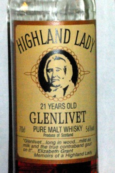

Michael A. Padlipsky
May 9, 1939 - March 3, 2011
MIT '61 xxi

© 2011, 2021 William D. Ricker for the Literary Estate of M.A.Padlipsky.
Prior chapter of the quest — Up to Malt home — The Book and Net stuff — SciFi Literary matters and other Puns of the Year
May 9, 1939 - March 3, 2011
MIT '61 xxi
Time
is
Kyptonite
Decor consisted of the above, plus some other slogans from the "slogans suitable for framing" provided in The Book's appendices, and various old photos folks could bring.
(Names with one notable exception suppressed in the interests of privacy.)
The Wake was hosted by Mike's almost-widow, a long-time off-and-on-again girlfriend lately styled "fiancée" despite lack of plans for either to sell out and change coasts.
The major oration, call it a eulogy if you will, was provided by Vint Cerf, speaking as former ARPA project manager for the Internet - speaking appropriately enough over the Internet video, having pre-recorded his remarks.
One of the honorary nieces who could not attend sent a textual reminiscence to be read.
Guests were split between MIT classmates of the Brotherhood of Only Children and their kids, who thus were Mike's official honorary nieces/nephews; work colleagues from MIT or MITRE or IRG/NWG, friends from elsewhere, and our hostess the late-life reconnected fiancée. My own daughter, an unofficial honorary niece, and her fiancé assisted me as our bar tenders.
Favorites and oddities
MAP's own Reference Notes (4th Ed, 1996) are quoted - sometimes preceded the original exemplar that the Wake Tasting bottle is the approximation to.
The short Gloss on Mike's grading system is it's based on his praxis as an English Grad Student / Teaching Assistant grading weekly composition assignments -
Check √ is Good to standard; X is Not Good.
Checks may be modified for a rough scale of
X — (−) √−− √− √(−) √ √(+) √+ √++ * **
A * rating is above and beyond and ** is magnificent, the MOHM by definition.
And yes, MAP was enough of a nerd he relished abusing the SquareRoot √ radical as a Checkmark ✓ in the pre-Unicode days, it was that or capital V.
Below here, your editors comments in italic are original to document, and my new editorial content are in the sidenotes like this: yes, like this! .
Ardbeg (Islay)
(? ? Adelphi) * :
Adelphi was Mike's favorite limited edition independent bottler; his friend "Charlie Mac" was their barrel picking nose for many years, and MAP totally trusted Charlie's nose, having been on a picking run with him.
This is the first one tasted at Adelphi and there's confusion about which cask it was but no doubt that it was magnificent. You can tell it's coming at arm's length, and it's about the only one I could go moonwalking over: I really did imagine myself on a pier with treated wooden pilings. (It's presumably the bourbon-casked 17 y.o. @ 52.8% I've got the factchit on, but...?) Its immensity, and its place of origin, prompted me to pick what I thought was it over the technically superior 28 y.o. Springbank [q.v.] to take home at the time.
(19y, 57%, Adelphi) √+ :
This is the Adelphi that I did get the bottle of, and have tasted a sample of another bottle of, so far. It's not quite the same thing as we had on Gloucester Lane: you have to bend your arm to know it's coming. (Might well score higher if it weren't for the disappointment that it doesn't appear to be the one I tasted Over There.)
Today's bottle is his recent-ish replacement for the second listing above.
Clynelish (Highlands)
(11y, 61% , Adelphi): √(-):
(Dist. '84) A pronounced nose, rather nice. Some initial sense of peat, but rather sweet after watering; later almost acrid, and more like smoke than peat, so I guess they're not interchangeable terms to me after all. Decent texture.
(OTS
OTS = Off The Shelf, meaning Age / Date / Strength unrecorded.
DOB
DOB=Distillery Own Bottling, abbreviated D in the compressed format notes. Wherein Adelphi is A, etc.
C2
C2 = Second Cairngorm Central Research Facility visit.
)
√- :
Perhaps a touch heavier than medium; nice burst of flavor.
Today's bottle is Glenhaven independent,
a later addition to Reference collection.
Clynelish is rarely seen as a single malt, is much desired by blenders.
Clynelish aka Brora 2 is getting out more today. Some may be startled at MAP's low scores. I love the umami, I guess he didn't.
Glen Grant MOHM (Highlands)
(14y ? A&N) * or even ** by definition
Army/Navy Stores Glen Grant Magnificent Old Highland Malt The alpha and omega dram for MAP's Research, Nemesis and Macguffin. See the Prolegomena and Post Script for the story.
Highland Lady (Glenlivet) (Highland)
( 21y 56% DOB ) √+ :

This was the other hit of C4.
C4 is 4th visit to Cairngorm Whisky Centre "Central Research Facility".
At last I understand why Glenlivet used to have a good reputation: it's one of theirs, named after an ancestral Grant (Elizabeth), author of the 1820something Memoirs of a Highland Lady that had a memorable line about the product, and is rather wonderful, despite that rather unprepossessing label. (So my new girlfriend bears a marked resemblance to her late gracious majesty the Queen Empress Victoria, so what?)
Mike served Highland Lady to only most studious of acolytes.
Lagavulin (Islay!)
( 12y 43% DOB) * :
The major discovery of C1; indeed, THE Islay. Rich, peaty, and smooth. Not only Top Five, but probably Top Malt (especially since the older Macallans are so much pricier), though of course that's one of those matters of taste and some days even I prefer to have the 18 or 25 y.o. Mac. [N.B.: Raves for original white & black packaging only.]
Both packagings present.
Linkwood (Highlands)
(OTS OTS DOB) √ :
Reasonable exemplar of the lighter Highland style. Got "like Knockando but less sharp" on C3 recalibration.
[Was a Best Buy when at Trader Joe's.]
Macallan (Highland)
25y 43% DOB * :
Ever so slightly smoother than the 17/18 y.o.; possibly fractionally less peaty; not really "worth" twice the price, except to a fanatic.
Probably a bit more nose than the 17; at any rate, certainly Top Five. [96: And now it's three times the price....]
Mike's 25 is the old Anniversary edition. And don't ask what it costs now. Hasn't been notable peat in ages, and the 17 isn't sherry cask anymore.
17/18y 43% DOB * :
In '63/4/5, they were calling it 17 y.o., but now they seem to think it's 18; whatever, it's Top Five by me, being sweet and rich and better than the 12 y.o., though like all its siblings in not being particularly peaty. Vive le sherry casks regardless.
Both open. 25 is in the wooden case.
McCarthy's
Mike's big discovery of 2006, on which he blind tasted guests with glee.
it was both affordable and a good puzzle until the NYT spread the word. No rating since only the Maltings are Scots.
An Oregon distilled Scottish malt. Only 3 years old in new American barrels, made from imported Scottish malted barely at a orchardist's fruit brandy distillery.
Springbank (Cambeltown)
28y 53.8% Adelphi * :
Adelphi was Mike's favorite limited edition independent bottler; his friend "Charlie Mac" was their barrel picking nose for many years, and MAP totally trusted Charlie's nose, having been on a picking run with him.
I bought this as my 60th birthday present to myself several years before my 60th birthday because I knew it wouldn't last very long.
Technically superior to the immense Adelphi Ardbeg, I daresay, though I took the latter home with me out of respect for its size and origin
and sent for the Springer later when it occurred to me that I'd hate to be without one of it.
32y 50.8% Adelphi √+ :
There wasn't any more of the 28 y.o. the next time I was there, so I consoled myself with this one, which cost more and wasn't as good, but is still a marvelous dram in an understated way.
The second 32yo Adelphi is today's bottle.
Talisker (Islands)
( 12y 43.4% DOB √(+) :
Like a good Islay (though actually from Skye), but somewhat less peaty; perhaps a bit on the sharp side, though well worth having on hand and excellent value.
[Formerly; still worth while though.]
© 2011, 2021 William D. Ricker for Literary Estate of M.A.Padlipsky
Prior chapter of the quest — Up to Malt home — The Book and Net stuff — SciFi Literary matters and other Puns of the Year